About Community Over Code
Community Over Code (formerly ApacheCon) is the official open source conference of The Apache Software Foundation (The ASF). It brings together the global communities behind Apache open source projects for technical sessions, project-specific tracks, hands-on workshops, and discussions about governance and sustainable open source development.
Designed to foster direct collaboration, the event connects users, developers, contributors, committers, Project Management Committee members, and ASF leadership in a vendor-neutral environment grounded in the Apache model of open participation and consensus-driven decision-making.
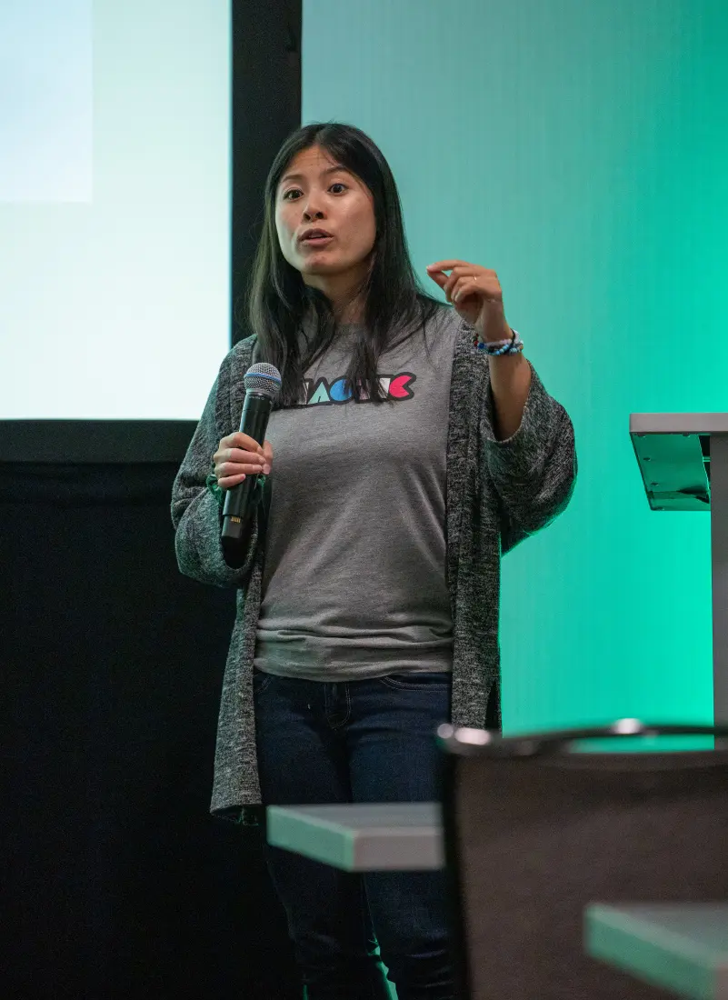
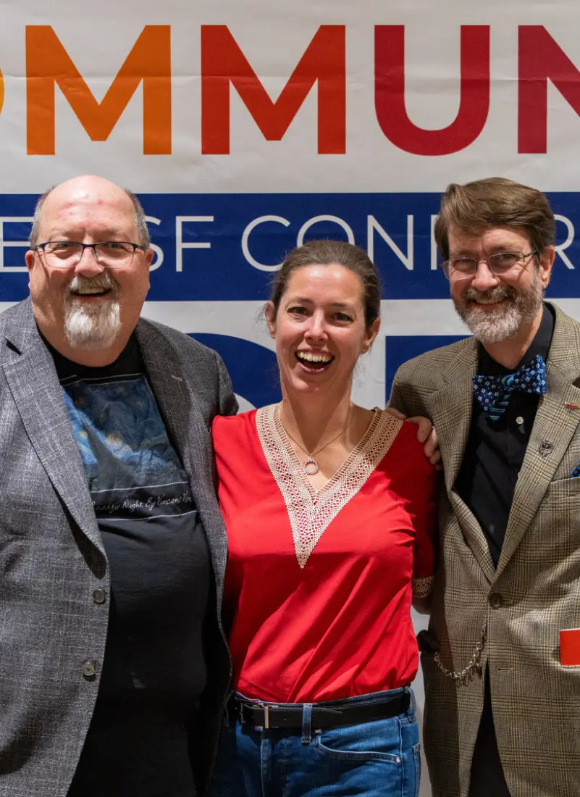
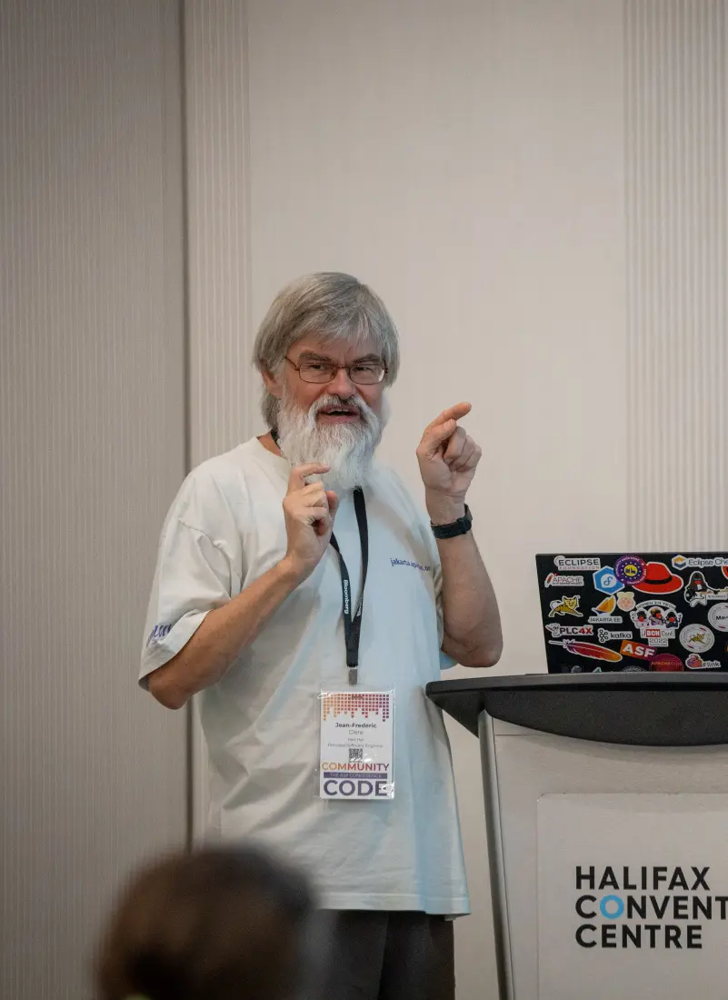
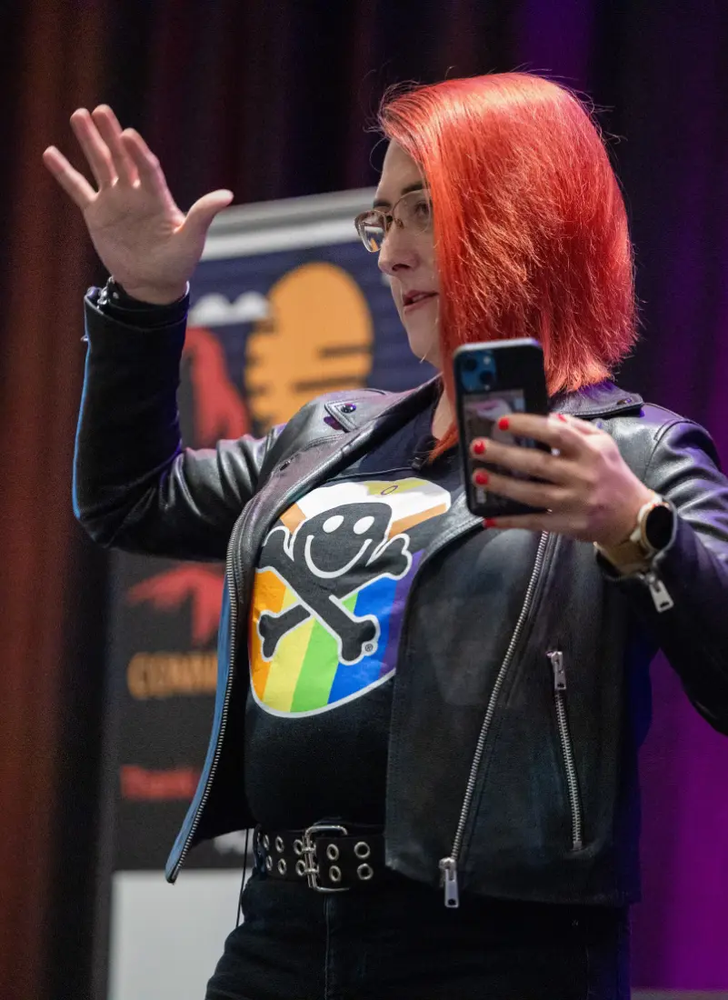
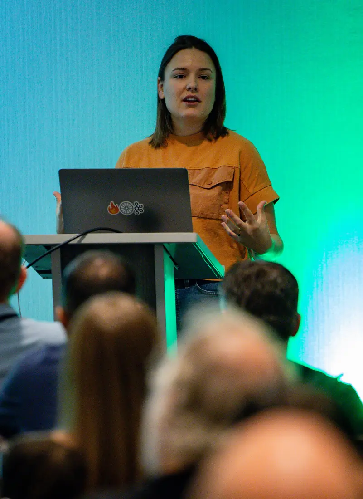
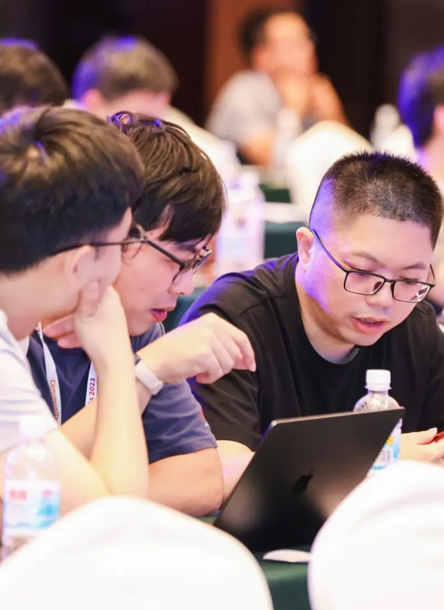
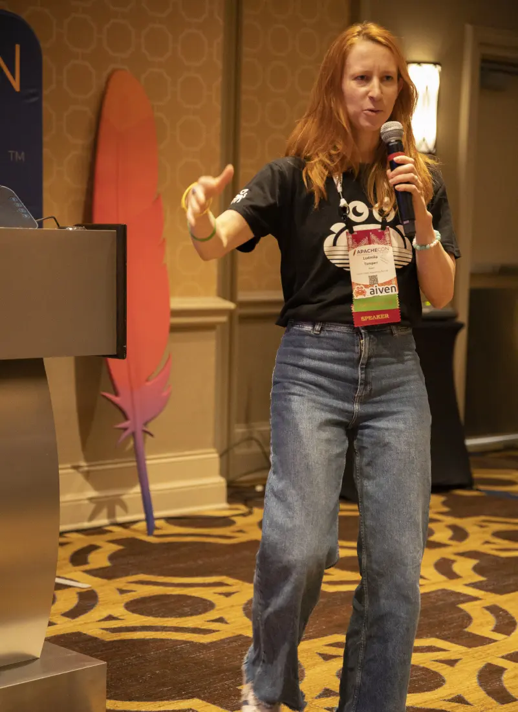
Our Vision for Community Over Code
The Community Over Code conference strives to achieve the following goals, positioning itself as a premier, open source, and highly technical collaborative event.
Technical Depth and Breadth
Offer a wide range of sessions that provide both deep technical insights and broad overviews across the diverse ecosystem of Apache projects.
Community Building
Foster connections and collaboration among contributors, committers, users, and ASF leadership to strengthen the global Apache community.
Vendor-Neutral Environment
Maintain a vendor-neutral space focused on open source principles, free from commercial promotion, where the community can share knowledge and collaborate openly.
Governance and Sustainability Focus
Provide a platform for discussions about open source governance, project sustainability, and the health of the Apache ecosystem.
History of Community Over Code
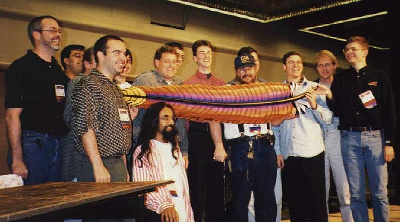
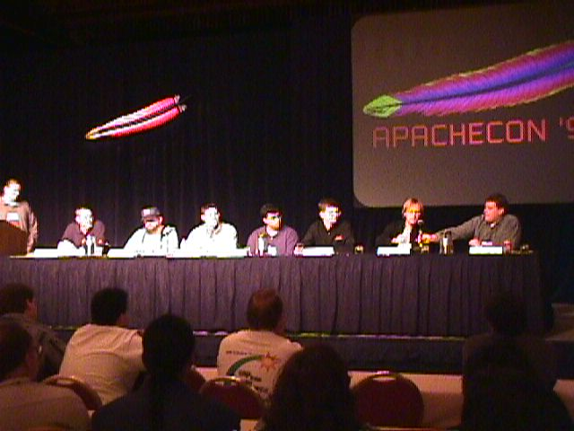
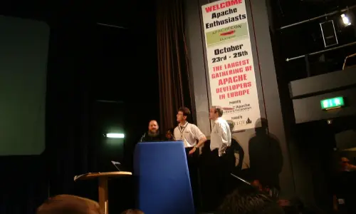
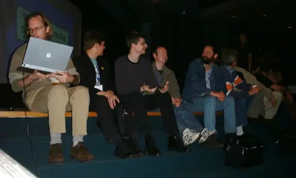
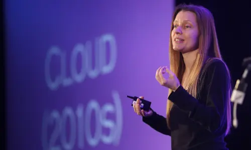
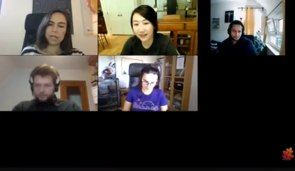
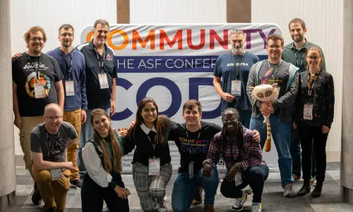
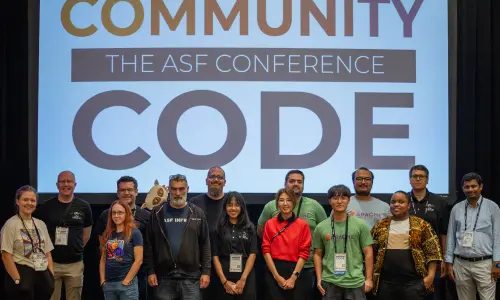
1998
The first ApacheCon was held in San Francisco, bringing together developers and users of the Apache HTTP Server at a time when the project powered a majority of the web. The event marked one of the earliest dedicated gatherings focused on open source infrastructure software.
1999
As The Apache Software Foundation (The ASF) was established as a 501(c)(3), ApacheCon began reflecting a broader mission beyond the web server, supporting a growing ecosystem of Apache projects and contributors.
2000
ApacheCon expanded internationally, demonstrating the global reach of the Apache community and the increasing adoption of Apache software in enterprise environments.
2001 - 2002
The conference evolved alongside The ASF’s governance model, highlighting meritocratic contribution, open decision-making, and the foundation’s expanding portfolio of projects.
Mid 2000s
ApacheCon featured technical deep dives across new Apache projects in areas such as Java, XML, data systems, and infrastructure tooling, reflecting the ASF’s growth beyond web technologies.
2010s
With the rise of distributed systems and large-scale data platforms, ApacheCon hosted dedicated tracks for major projects, production case studies, and sessions on open source sustainability and governance.
2020 - 2021
The conference adapted to global circumstances with virtual formats, maintaining continuity for the Apache community while expanding remote participation worldwide.
2023
The event was renamed Community Over Code, reflecting a long-standing Apache principle that healthy communities are the foundation of sustainable open source projects.
Today
Community Over Code continues as the official conference of The Apache Software Foundation, bringing together contributors, committers, users, and open source leaders for technical collaboration and governance discussions.
FAQs
What is Community Over Code?
Community Over Code is the official annual conference of the Apache Software Foundation (The ASF). It brings together contributors, committers, developers, and users of Apache open source projects for technical sessions and discussions about open source governance and sustainability.
Is Community Over Code the official Apache conference?
Yes. Community Over Code is the official conference of The Apache Software Foundation (The ASF) and was formerly known as ApacheCon.
What Apache projects are discussed?
Community Over Code features sessions and tracks dedicated to a wide range of Apache projects, with topics varying each year based on community participation and project activity.
Can non-committers attend?
Yes. Community Over Code is open to developers, users, contributors, and anyone interested in Apache open source projects.
How is Community Over Code different from vendor conferences?
Community Over Code is community-led and vendor-neutral, focusing on Apache projects, governance, and technical collaboration rather than product marketing or commercial promotion.
Where is Community Over Code held?
The event locations vary each year and may include in-person and hybrid participation options.
Can I submit a talk?
Yes. The conference includes an open call for proposals (CFP) where community members can submit technical and governance-focused sessions.
What topics are typically covered?
Sessions include project deep dives, production use cases, release processes, security practices, governance, incubation, and open source sustainability.
Is there a discount for students?
Yes. Discounted registration options are typically available for students; details are provided on the registration page each year.
Why the name “Community Over Code?”
The name reflects a core Apache principle: sustainable open source depends on healthy, collaborative communities. Strong communities can improve code over time; great code cannot survive without strong community governance.
Contact Us
If you want to stay up-to-date on all ASF events, join the read-only mailing list.
Slack
Attendees, the best place for getting your questions answered is to join the Community Over Code Slack (aka Apachecon Slack).

Mailing List
To stay updated on all ASF events, join the read-only mailing list.
Subscription address:
announce-subscribe@apachecon.com
Web archives
For specific questions about the conference, please contact the planning team.
planners@apachecon.com